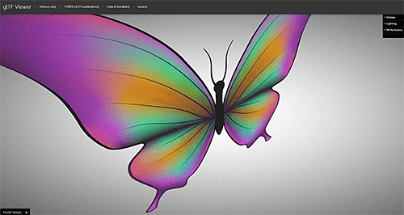
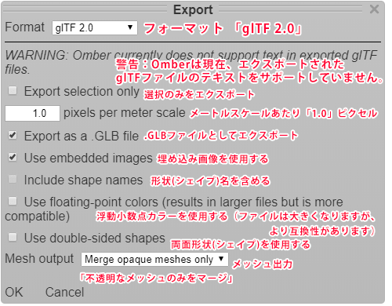

glTF 2.0へのエクスポート
Omberは、glTF 3dファイル形式への画像のエクスポートをサポートしています。
これは、特定の3Dゲームエンジンおよび3Dアニメーションツールで使用する為に
2Dベクターグラフィックスをエクスポート出来る為に便利です。
例えば、ゲームで使用したい単純なSVG画像がある場合、
それをOmberにインポートしてからglTF 2.0に再エクスポート出来ます。
Omberは、SVG形状を自動的に三角形メッシュに変換し、
多くのゲームエンジンで使用される3Dグラフィックパイプラインで処理出来ます。
特定のプログラムで使用する為にベクターアートをエクスポートする為の
より詳細な手順は次の通りです。
- Unity game engine
- Pixi.js graphics library
- Blender
OmberがベクターアートをglTF 2.0などの3Dファイル形式にエクスポートすると、
図面が3D三角形メッシュに変換されます。
図面の各形状は、独自の平らな三角形メッシュになります。
これらのメッシュは、各シェイプのメッシュが異なるZ値を持つように配置されるため、
他のシェイプの前にあるシェイプはそれらの他のシェイプよりも高いZ値を持ちます。
形状ごとにZ値が異なるため、正しく描画するには、
エクスポートされた図面を正射影を使用して正面から直接表示する必要があります。
Omberは、エクスポートしたglTFデータを、データの処理内容に応じてさまざまな方法でエンコード出来ます。
以下は、幾つかのエクスポート設定の説明です。
- メートルスケールあたりのピクセル
- glTFファイル形式は通常、3Dオブジェクトのモデルを保存する為に使用されるため、
ピクセルではなくメートルを測定単位として使用します。
Omberは通常、デフォルトで1メートルあたり100ピクセルを使用して、
3Dグラフィックプログラムで図面が適切なサイズで表示されるようにします。
- .GLBファイルとしてエクスポート
- glTFファイルは、.glbファイルと呼ばれる単一のファイルとして保存することも、
複数のファイルに分割する事も出来ます。
複数のファイルを持つ事は、テクスチャやメッシュなどのリソースを共有する
多くのアセットがあるアプリケーションにとって便利ですが、
通常、単一の.GLBファイルを持つ方が扱いやすいです。
- 埋め込み画像を使用
- 図面で使用される画像とテクスチャは、glTFファイルに直接含める事も、
個別の画像ファイルとして保存する事も出来ます。
- シェイプ名を含める
- 「メッシュを分離」のメッシュ出力設定を使用してエクスポートすると、
Omberはエクスポートされたファイルに各形状とグループの名前を保存します。
- 浮動小数点カラーを使用する
- 通常、この設定は必要ありません。
- 両面形状を使用する
- Omberによってエクスポートされたベクターアートは、正面から見た場合にのみ正しく見えるため、
Omberは背面から見た時に図形が消えるように構成できます。
ただし、カメラの向きが間違っているとアートが消えてしまう為、
一部の3Dプログラムで作業している時に問題が発生する可能性があります。
一般に、Omberの図面を背面と正面の両方から表示出来る両面形状を使用する場合の
パフォーマンスやサイズのペナルティはありません。
- メッシュ出力
- Omberは、ニーズに合わせて出力する3Dメッシュを前処理出来ます。
「独立したメッシュ」は、ベクトル描画のグループやその他の構造を可能な限り保存しようとします。
ただし、これにより多くの個別の3Dメッシュが生成されます。
これは、一部の3Dプログラムでの作業が難しく、最適化を行わないとレンダリングが遅くなる可能性があります。
「メッシュの結合」は、全てを可能な限り少ないメッシュに結合します。
殆どの3Dモデルは単一のメッシュで構成されている為、
多くの3Dプログラムのツールは少数のメッシュで最も簡単に使用出来ます。
残念ながら、単一のメッシュに結合された後は、図面のさまざまな形状やグループを操作する事は困難です。
「不透明なメッシュのみをマージ」は、ゲームエンジンで使用する為に
ベクターグラフィックスをエクスポートする場合に便利です。
メッシュを透明で効率的に表示する為に、殆どのゲームエンジンは描画の不透明な部分を全て一度に表示し、
各透明な図形を個別に描画します。
この設定は、すべての不透明なメッシュをグループ化して、すばやく表示出来る単一のメッシュにします。

Omber glTF 2.0ファイルをUnityゲームエンジンにインポートする
（省略）
Omber glTF 2.0ファイルをPixi.jsにインポートする
Pixi.jsは、HTML5ゲームでよく使用されるJavaScriptグラフィックエンジンです。
グラフィックエンジンは、PhaserやRPG Maker MVなどのゲームエンジンで使用されます。
HTML5ゲームでOmberのベクターグラフィックを使用すると、
透明で高解像度のグラフィックをより小さく、より速くダウンロードできる為、特に便利です。
Pixi.jsで使用するファイルをエクスポートする時は、次の設定を使用する事をお勧めします。

- Omberの1ピクセルがPixi.jsの1ピクセルにマップされるように、
メートルスケールごとに1ピクセルを使用します
- .glbファイルとしてエクスポート
- メッシュ出力を「不透明メッシュのみをマージ」に設定します。
描画がx=0及び、y=0の原点に対してどこにあるかに注意して下さい。
Omberの情報パネルを開いて、その場所を確認出来ます。
PixiでglTFファイルを表示すると、元の原点を中心に図面が中央に配置されます。
OmberによってエクスポートされたglTFファイルをPixi.jsにインポートする為の
オープンソースプラグインがあります。
プラグインは、PixiプログラムでエクスポートされたglTFファイルを使用する方法について、
より詳細な手順を提供します。
Omber glTF 2.0ファイルをBlenderにインポートする
（省略）